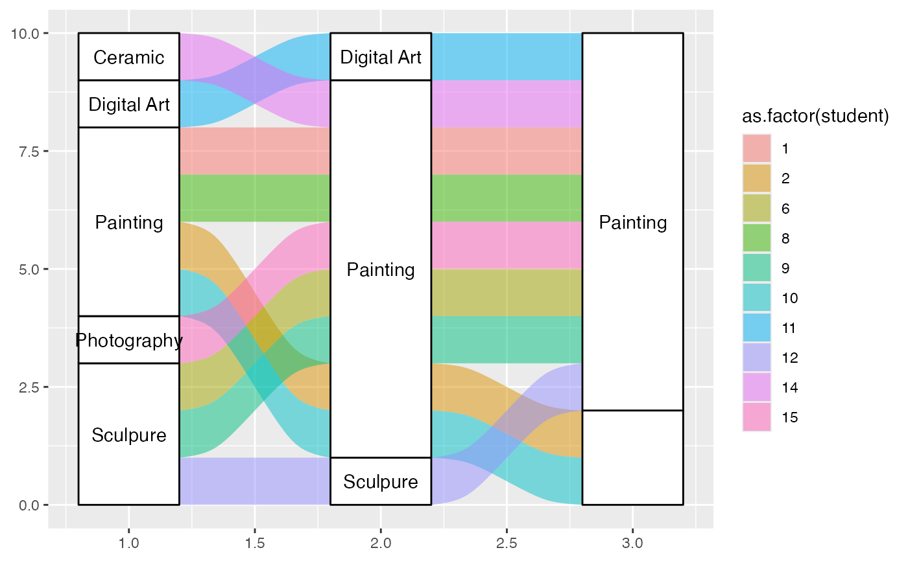
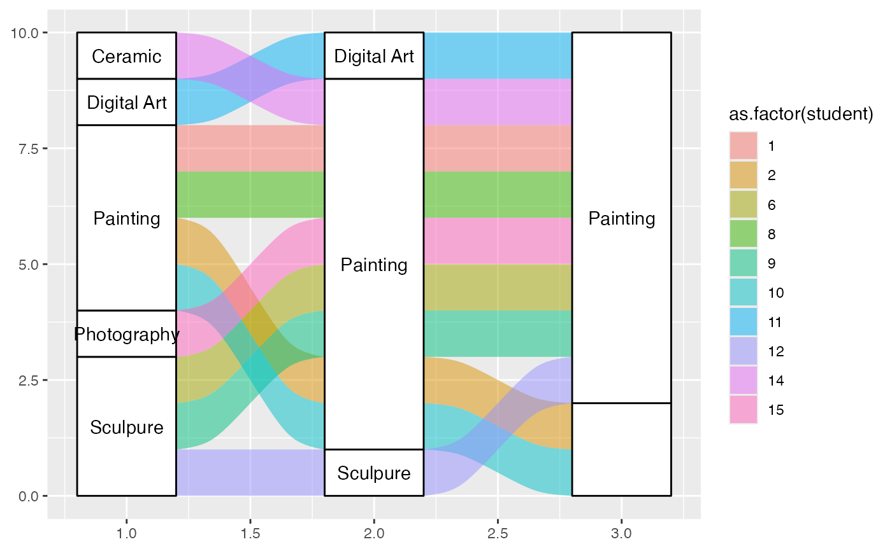

Check for alluvial structure and convert between alluvial formats
Source:R/alluvial-data.r
alluvial-data.RdAlluvial plots consist of multiple horizontally-distributed columns (axes) representing factor variables, vertical divisions (strata) of these axes representing these variables' values; and splines (alluvial flows) connecting vertical subdivisions (lodes) within strata of adjacent axes representing subsets or amounts of observations that take the corresponding values of the corresponding variables. This function checks a data frame for either of two types of alluvial structure:
Usage
is_lodes_form(
data,
key,
value,
id,
weight = NULL,
site = NULL,
logical = TRUE,
silent = FALSE
)
is_alluvia_form(
data,
...,
axes = NULL,
weight = NULL,
logical = TRUE,
silent = FALSE
)
to_lodes_form(
data,
...,
axes = NULL,
key = "x",
value = "stratum",
id = "alluvium",
diffuse = FALSE,
discern = FALSE
)
to_alluvia_form(data, key, value, id, distill = FALSE)Arguments
- data
A data frame.
- key, value, id
In
to_lodes_form, handled as intidyr::gather()and used to name the new axis (key), stratum (value), and alluvium (identifying) variables. Into_alluvia_form, handled as intidyr::spread()and used to identify the fields ofdatato be used as the axis (key), stratum (value), and alluvium (identifying) variables.- weight
Optional field of
data, handled usingrlang::enquo(), to be used as heights or depths of the alluvia or lodes.- site
Optional vector of fields of
data, handled usingrlang::enquos(), to be used to group rows before testing for duplicate and missing id-axis pairings. Variables intended for faceting should be passed tosite.- logical
Defunct. Whether to return a logical value or a character string indicating the type of alluvial structure ("none", "lodes", or "alluvia").
- silent
Whether to print messages.
- ...
Used in
is_alluvia_formandto_lodes_formas indplyr::select()to determine axis variables, as an alternative toaxes. Ignored whenaxesis provided.- axes
In
*_alluvia_form, handled as indplyr::select()and used to identify the field(s) ofdatato be used as axes.- diffuse
Fields of
data, handled usingtidyselect::vars_select(), to merge into the reshapen data byid. They must be a subset of the axis variables. Alternatively, a logical value indicating whether to merge all (TRUE) or none (FALSE) of the axis variables.- discern
Logical value indicating whether to suffix values of the variables used as axes that appear at more than one variable in order to distinguish their factor levels. This forces the levels of the combined factor variable
valueto be in the order of the axes.- distill
A logical value indicating whether to include variables, other than those passed to
keyandvalue, that vary within values ofid. Alternatively, a function (or its name) to be used to distill each such variable to a single value. In addition to existing functions,distillaccepts the character values"first"(used ifdistillisTRUE),"last", and"most"(which returns the first modal value).
Details
One row per lode, wherein each row encodes a subset or amount of observations having a specific profile of axis values, a
keyfield encodes the axis, avaluefield encodes the value within each axis, and aidcolumn identifies multiple lodes corresponding to the same subset or amount of observations.is_lodes_formtests for this structure.One row per alluvium, wherein each row encodes a subset or amount of observations having a specific profile of axis values and a set
axesof fields encodes its values at each axis variable.is_alluvia_formtests for this structure.
to_lodes_form takes a data frame with several designated variables to
be used as axes in an alluvial plot, and reshapes the data frame so that
the axis variable names constitute a new factor variable and their values
comprise another. Other variables' values will be repeated, and a
row-grouping variable can be introduced. This function invokes
tidyr::gather().
to_alluvia_form takes a data frame with axis and axis value variables
to be used in an alluvial plot, and reshape the data frame so that the
axes constitute separate variables whose values are given by the value
variable. This function invokes tidyr::spread().
See also
Other alluvial data manipulation:
self-adjoin
Examples
# Titanic data in alluvia format
titanic_alluvia <- as.data.frame(Titanic)
head(titanic_alluvia)
#> Class Sex Age Survived Freq
#> 1 1st Male Child No 0
#> 2 2nd Male Child No 0
#> 3 3rd Male Child No 35
#> 4 Crew Male Child No 0
#> 5 1st Female Child No 0
#> 6 2nd Female Child No 0
is_alluvia_form(titanic_alluvia,
weight = "Freq")
#> [1] TRUE
# Titanic data in lodes format
titanic_lodes <- to_lodes_form(titanic_alluvia,
key = "x", value = "stratum", id = "alluvium",
axes = 1:4)
head(titanic_lodes)
#> Freq alluvium x stratum
#> 1 0 1 Class 1st
#> 2 0 2 Class 2nd
#> 3 35 3 Class 3rd
#> 4 0 4 Class Crew
#> 5 0 5 Class 1st
#> 6 0 6 Class 2nd
is_lodes_form(titanic_lodes,
key = "x", value = "stratum", id = "alluvium",
weight = "Freq")
#> [1] TRUE
# again in lodes format, this time diffusing the `Class` variable
titanic_lodes2 <- to_lodes_form(titanic_alluvia,
key = variable, value = value,
id = cohort,
1:3, diffuse = Class)
head(titanic_lodes2)
#> cohort Class Survived Freq variable value
#> 1 1 1st No 0 Class 1st
#> 2 1 1st No 0 Sex Male
#> 3 1 1st No 0 Age Child
#> 4 2 2nd No 0 Class 2nd
#> 5 2 2nd No 0 Sex Male
#> 6 2 2nd No 0 Age Child
is_lodes_form(titanic_lodes2,
key = variable, value = value, id = cohort,
weight = Freq)
#> [1] TRUE
# use `site` to separate data before lode testing
is_lodes_form(titanic_lodes2,
key = variable, value = value, id = Class,
weight = Freq)
#> Duplicated id-axis pairings.
#> [1] FALSE
is_lodes_form(titanic_lodes2,
key = variable, value = value, id = Class,
weight = Freq, site = cohort)
#> [1] TRUE
# curriculum data in lodes format
data(majors)
head(majors)
#> student semester curriculum
#> 1 1 CURR1 Painting
#> 2 2 CURR1 Painting
#> 3 6 CURR1 Sculpure
#> 4 8 CURR1 Painting
#> 5 9 CURR1 Sculpure
#> 6 10 CURR1 Painting
is_lodes_form(majors,
key = "semester", value = "curriculum", id = "student")
#> [1] TRUE
# curriculum data in alluvia format
majors_alluvia <- to_alluvia_form(majors,
key = "semester", value = "curriculum",
id = "student")
head(majors_alluvia)
#> student CURR1 CURR3 CURR5 CURR7 CURR9 CURR11 CURR13
#> 1 1 Painting Painting Painting Painting Painting Painting Painting
#> 2 2 Painting Painting Painting Painting Painting Painting <NA>
#> 3 6 Sculpure Sculpure Painting Painting Painting Painting Painting
#> 4 8 Painting Painting Painting Painting <NA> Painting Painting
#> 5 9 Sculpure Art History Art History Painting Painting Painting Painting
#> 6 10 Painting Painting Painting Painting Painting Painting <NA>
#> CURR15
#> 1 Painting
#> 2 <NA>
#> 3 Painting
#> 4 Painting
#> 5 Painting
#> 6 <NA>
is_alluvia_form(majors_alluvia, tidyselect::starts_with("CURR"))
#> Missing alluvia for some stratum combinations.
#> [1] TRUE
# distill variables that vary within `id` values
set.seed(1)
majors$hypo_grade <- LETTERS[sample(5, size = nrow(majors), replace = TRUE)]
majors_alluvia2 <- to_alluvia_form(majors,
key = "semester", value = "curriculum",
id = "student",
distill = "most")
#> Distilled variables: hypo_grade
head(majors_alluvia2)
#> student hypo_grade CURR1 CURR3 CURR5 CURR7 CURR9
#> 1 1 A Painting Painting Painting Painting Painting
#> 2 2 D Painting Painting Painting Painting Painting
#> 3 6 B Sculpure Sculpure Painting Painting Painting
#> 4 8 B Painting Painting Painting Painting <NA>
#> 5 9 E Sculpure Art History Art History Painting Painting
#> 6 10 A Painting Painting Painting Painting Painting
#> CURR11 CURR13 CURR15
#> 1 Painting Painting Painting
#> 2 Painting <NA> <NA>
#> 3 Painting Painting Painting
#> 4 Painting Painting Painting
#> 5 Painting Painting Painting
#> 6 Painting <NA> <NA>
# options to distinguish strata at different axes
gg <- ggplot(majors_alluvia,
aes(axis1 = CURR1, axis2 = CURR7, axis3 = CURR13))
gg +
geom_alluvium(aes(fill = as.factor(student)), width = 2/5, discern = TRUE) +
geom_stratum(width = 2/5, discern = TRUE) +
geom_text(stat = "stratum", discern = TRUE, aes(label = after_stat(stratum)))
 gg +
geom_alluvium(aes(fill = as.factor(student)), width = 2/5, discern = FALSE) +
geom_stratum(width = 2/5, discern = FALSE) +
geom_text(stat = "stratum", discern = FALSE, aes(label = after_stat(stratum)))

# warning when inappropriate
ggplot(majors[majors$semester %in% paste0("CURR", c(1, 7, 13)), ],
aes(x = semester, stratum = curriculum, alluvium = student,
label = curriculum)) +
geom_alluvium(aes(fill = as.factor(student)), width = 2/5, discern = TRUE) +
geom_stratum(width = 2/5, discern = TRUE) +
geom_text(stat = "stratum", discern = TRUE)
#> Warning: Data is already in lodes format, so `discern` will be ignored.
#> Warning: Data is already in lodes format, so `discern` will be ignored.
#> Warning: Data is already in lodes format, so `discern` will be ignored.
#> Warning: Removed 1 row containing missing values or values outside the scale range
#> (`geom_text()`).
gg +
geom_alluvium(aes(fill = as.factor(student)), width = 2/5, discern = FALSE) +
geom_stratum(width = 2/5, discern = FALSE) +
geom_text(stat = "stratum", discern = FALSE, aes(label = after_stat(stratum)))

# warning when inappropriate
ggplot(majors[majors$semester %in% paste0("CURR", c(1, 7, 13)), ],
aes(x = semester, stratum = curriculum, alluvium = student,
label = curriculum)) +
geom_alluvium(aes(fill = as.factor(student)), width = 2/5, discern = TRUE) +
geom_stratum(width = 2/5, discern = TRUE) +
geom_text(stat = "stratum", discern = TRUE)
#> Warning: Data is already in lodes format, so `discern` will be ignored.
#> Warning: Data is already in lodes format, so `discern` will be ignored.
#> Warning: Data is already in lodes format, so `discern` will be ignored.
#> Warning: Removed 1 row containing missing values or values outside the scale range
#> (`geom_text()`).